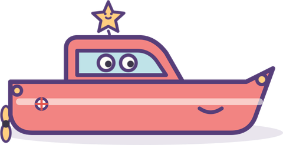
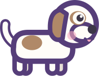
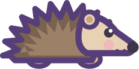
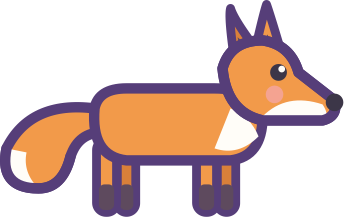
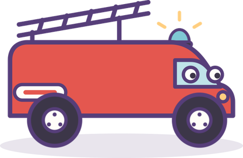

🌐 Italiano
Brum Brum: macchinine e aerei
Barche, razzi e animali









Brum Brum è un primo gioco delicato su macchinine, aerei, barche e spazio per bambini dai 2 ai 5 anni. Costruisci il tuo veicolo e parti: lungo la strada ci sono piccoli animali che cercano casa — caricali e portali fino al traguardo, e ognuno può diventare il tuo animaletto in garage. Non c’è niente da leggere, nessun timer e non si perde mai: a ogni tocco risponde un bip allegro, un saltello o uno scintillio.

PORTA CON TE TUTTI GLI ANIMALI
- Gli animaletti cercano casa: vivono lungo la strada, sui rami, in cielo e sott’acqua — ognuno si riconosce subito e risponde al tocco con la sua voce
- Prendi un animale qualsiasi e salterà in un rimorchio, una zattera, un cestino, un acquario o un modulo spaziale; l’autobus, l’aereo e il dirigibile portano i passeggeri ai finestrini
- Piccoli alieni gentili fluttuano vicino a ogni pianeta: il disco volante li solleva con il suo raggio
- All’arrivo tutti i passeggeri saltano giù e salutano con la mano

COSTRUISCI IL TUO VEICOLO
- Scegli carrozzeria, colore, ruote e decorazione: ogni combinazione funziona
- Personalizzalo in officina: motore, propulsore, alettone, luci e, al posto del fumo, una festa che esce dallo scarico — coriandoli, fuochi d’artificio, bolle di sapone, cuoricini, farfalle, note musicali e altro ancora
- Tocca il tuo veicolo e ogni volta farà un’acrobazia nuova; e per prendere una stella nel cielo c’è un grande pulsante per saltare
- In ogni stanza vive un animaletto amico: in garage, nell’hangar e al molo. Con un razzo l’hangar diventa una stazione spaziale, con un sottomarino il molo diventa una base sottomarina

VAI DOVE VUOI
- Guida nel bosco, lungo la spiaggia, sulla neve, nel deserto e nei paesi delle fiabe
- Sorvola città con monumenti famosi e vola verso ogni pianeta del Sistema solare, poi guardalo girare mentre le sue lune gli ruotano intorno
- Naviga su fiumi e mari, tuffati tra barriere coralline, navi affondate e grotte di cristallo, e guida il sottomarino su e giù con il dito
- Tocca il sole e il giorno diventa notte; cadono le foglie, brillano gli arcobaleni e passano le stelle cadenti

PENSATO PER LE MANINE
- Pulsanti grandi, solo in orizzontale, non serve saper leggere
- Suoni e una leggera vibrazione rispondono a ogni tocco
- Funziona offline, ovunque: in macchina, in aereo, dalla nonna
- Adatto ai bambini ipovedenti: il lettore di schermo VoiceOver legge pulsanti e personaggi
- Se lo sfarfallio disturba il tuo bambino, attiva «Riduci movimento» in Impostazioni: il gioco toglie le scosse e i coriandoli in eccesso

GIOCA GRATIS, UN SOLO ACQUISTO PER TUTTO
Gratis: la berlina, il camioncino e il camion dei pompieri, tutti i colori, il bosco e la spiaggia con i loro animali, la modalità notte, il meteo e le stagioni, più una sbirciatina nell’hangar e al molo.
«Sblocca tutto» apre tutti i 27 veicoli — auto e mezzi speciali, aerei, razzi e un disco volante, barche e sottomarini — ogni pezzo dell’officina, ogni ruota e decorazione, e tutte le 46 mappe: paesi delle fiabe, otto città, il Sistema solare, i mari e il mondo sottomarino. Acquisto unico, condivisibile con i familiari tramite «In famiglia». Nessun abbonamento.

SICURO PER I BAMBINI
- Niente pubblicità, tracciamento, analisi o account
- I progressi vengono salvati solo su questo dispositivo; nulla viene inviato a noi o ad altri
- L’acquisto è protetto da una verifica per i genitori
- Nessun link che porta fuori dal gioco
Domande o idee? Visita la pagina di assistenza: leggiamo ogni messaggio.
❤️
Siamo una famiglia normale con due bimbi piccoli. Io e mia moglie inventiamo giocattoli per loro e condividiamo i migliori con altri bambini, con tutto il cuore.